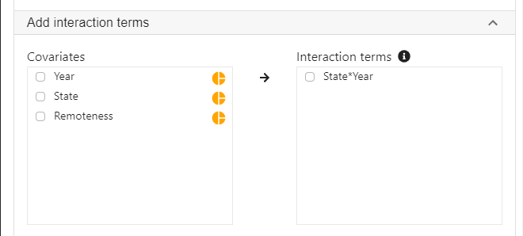

StatsNotebook
Moderation (Interaction) analysis using linear regression
Tags: Analysis, R code, Regression
Assumed knowledge in this tutorial: Linear regression
Moderation analysis is used to examine if the effect of an independent variable on the dependent variable is the same across different levels of another independent variable (moderator). In an other words, it is use to examine whether the moderator change the strength of the relationship between the independent and dependent variables.
Example research questions
- Is the effect of psychotherapy (independent variable) on depression (dependent variable) stronger for females than for males (moderator: sex)?
- In this example, we want to see if the effect of psychotherapy on depression is the same across sex (i.e. same for both female and male)
- Does the implementation of an alcohol tax in one state change alcohol consumption, compared to other states without changes in tax?
- This is a less obvious example. Here, we want to test if the change over time (effect of time before and after a new tax rule) was the same across states. Does states (moderator) change the effect of time (independent variable) on alcohol consumption (dependent variable)?
In this tutorial, we will examine three scenarios.
- Categorical independent variable and categorical moderator
- Numeric independent variable and categorical moderator
- Numeric independent variable and numeric moderator
For instances with a categorical independent variable and numeric moderator, the analytic strategy would be the same as conducting moderation analysis with numeric independent variable with categorical moderator.
Categorical independent variable and categorical moderator
Suppose that in Australia, Queensland implemented an increase in alcohol tax in 2018 and there was no change in tax in any other states (e.g. Victoria, New South Wales). We have collected data on alcohol consumption in 2017 and 2019, and want to test if the change in alcohol consumption (measured in number of standard drinks consumed per month) in Queensland was different from other states.
- A simple before/ after comparison using only Queensland data is not sufficient to test if the tax increase changed alcohol consumption because there is no comparision group. A before/ after difference can simply be due to a decreasing trend. We need to test if the change in Queensland is larger than other states.
- In this analysis, we will test the interaction between year and state. (Does state change the effect of year on alcohol consumption?)
We will first show the R codes for this analysis below, and we will provide a step-by-step guide on how to complete this analysis. We use the built-in Alcohol dataset in this example. This dataset can be loaded into StatsNotebook using the instructions provided here. We will also use the emmeans package in R for pairwise comparisons and for building the interaction plot.
R codes
"Linear regression"
res <- lm(alcohol ~ Year + State + Remoteness + State*Year,
data=currentDataset)
summary(res)
cbind(coef(res), confint(res, level = 0.95))
library(car)
res.std <- rstandard(res)
plot(res.std, ylab="Standardized Residuals")
"Outlier Test. Observations with a Bonferroni p < .01 might be considered as outliers and might need further investigation."
outlierTest(res)
infIndexPlot(res)
"Residual plots, curvature tests and normality plot"
residualPlots(res)
ggplot(as.data.frame(res.std), aes(sample = res.std)) +
geom_qq() +
geom_qq_line()
"Variance inflation factor (VIF >=5 indicates high level of multicollinearity)"
vif(res)
"Estimated Marginal Means"
library(emmeans)
emm <- emmeans(res, pairwise ~ State*Year, level = 0.95)
summary(emm)
eff_size(emm, sigma = sigma(res), edf = res$df.residual)
emmip(res, Year ~ State,
cov.keep = 3, at = list(),
CIs = TRUE, level = 0.95, position = "jitter")
"Chan, G. and StatsNotebook Team (2020). StatsNotebook. (Version 0.1.0) [Computer Software]. Retrieved from https://www.statsnotebook.io"
"R Core Team (2020). The R Project for Statistical Computing. [Computer software]. Retrieved from https://r-project.org"
Using StatsNotebook
Prior to running the moderation analysis, we will need to conduct descriptive analysis and it is always good practice to visualise the data.
To run a moderation analysis using linear regression (categorical independent variable and categorical moderator),
-
Click Analysis at the top
-
Click Regression and select Linear regression (Numeric outcome) from the menu
-
In the left panel, select alcohol into Outcome, and select Year, State and Remoteness into Covariates.
- We have added Remoteness into this analysis to adjust for its effect.
- We will need to code Year, State and Remoteness into factor because they are categorical variables. See Converting variable type for step-by-step guide.
- For this analysis, because we compared Queensland against all other states, we set QLD as the reference level of state. See Setting reference level for categorical variable for step-by-step guide.
-
Expand the panel Add interaction terms, select State and Year into Interaction terms.
- The order of selecting variables will determine the horizontal axis of the interaction plot (see interpretaion below). The first selected variable will always go to the horizontal axis. In this example, we click State first and then Year.

-
Expand the panel Estimated Marginal Means, select State*Year on the variable list, and select Pairwise comparison and Interaction plot.

** For this analysis, we should also adjust for Postcode because participants from the same postcode may be more similar compared to participants from other postcodes, thus violating the assumption of independent observation. We will leave this out for now for so that we can focus on the moderation analysis. See Linear mixed model for how to adjust for data dependency.
R codes explained - Moderation analysis
The following are from the top section of the generated codes.
"Linear regression"
res <- lm(alcohol ~ Year + State + Remoteness + State*Year,
data=currentDataset)
summary(res)
cbind(coef(res), confint(res, level = 0.95))
This code tells R to run a linear regression using the lm function. The left side of the “~” symbol specifies the dependent variable; the right side specifies the independent variables. StatsNotebook has added the interaction term State*Year as an extra term. The results from this regression analysis is then printed out using the summary function. Finally, the cbind, coef and confint functions are used to print the model coefficients with the corresponding 95% confidence intervals.
The above code produces the model summary below.
Call:
lm(formula = alcohol ~ Year + State + Remoteness + State * Year,
data = currentDataset)
Residuals:
Min 1Q Median 3Q Max
-75.968 -35.474 -8.968 27.053 192.976
Coefficients:
Estimate Std. Error t value Pr(>|t|)
(Intercept) 72.032 3.914 18.401 < 2e-16 ***
Year2019 -21.224 5.097 -4.164 3.20e-05 ***
StateNSW 3.936 4.433 0.888 0.374659
StateNT -1.829 4.820 -0.379 0.704419
StateSA -5.948 4.692 -1.268 0.205040
StateTAS 1.506 5.329 0.283 0.777544
StateVIC -9.680 4.333 -2.234 0.025549 *
StateWA -12.796 5.743 -2.228 0.025940 *
RemotenessRegional -9.597 2.136 -4.492 7.28e-06 ***
Year2019:StateNSW 17.690 6.071 2.914 0.003592 **
Year2019:StateNT 17.983 6.740 2.668 0.007664 **
Year2019:StateSA 20.301 6.549 3.100 0.001952 **
Year2019:StateTAS 8.212 7.170 1.145 0.252149
Year2019:StateVIC 15.456 6.000 2.576 0.010029 *
Year2019:StateWA 24.608 6.986 3.522 0.000433 ***
---
Signif. codes: 0 '***' 0.001 '**' 0.01 '*' 0.05 '.' 0.1 ' ' 1
Residual standard error: 45.2 on 3651 degrees of freedom
Multiple R-squared: 0.03092, Adjusted R-squared: 0.02721
F-statistic: 8.321 on 14 and 3651 DF, p-value: < 2.2e-16
Interpretation
Using a significance level of 0.05, most of the interaction terms between Year and States are significant. This indicates that the changes in alcohol consumption in Queensland is different from the changes in other states. However, interpreting these coefficients is not straightforward.
An easier way to understand the interactions is to calculate the Estimated Marginal Means (EMMs). We can estimate the mean alcohol consumption by State and Year from our regression model. The following is the R codes for computing EMMs.
R codes explained - Estimated Marginal Means
The following R code is used for calculating the estimated marginal means and performing pairwise comparisons (with effect sizes).
"Estimated Marginal Means"
library(emmeans)
emm <- emmeans(res, pairwise ~ State*Year, level = 0.95)
summary(emm)
eff_size(emm, sigma = sigma(res), edf = res$df.residual)
Interpretation
The few lines of code produces a long list of output that can be broken down into three major sections.
Estimated Marginal Means
$emmeans
State Year emmean SE df lower.CL upper.CL
QLD 2017 67.2 3.83 3651 59.7 74.7
NSW 2017 71.2 2.26 3651 66.7 75.6
NT 2017 65.4 2.85 3651 59.8 71.0
SA 2017 61.3 2.65 3651 56.1 66.5
TAS 2017 68.7 3.65 3651 61.6 75.9
VIC 2017 57.6 2.08 3651 53.5 61.6
WA 2017 54.4 4.23 3651 46.1 62.7
QLD 2019 46.0 3.39 3651 39.4 52.7
NSW 2019 67.6 2.48 3651 62.8 72.5
NT 2019 62.2 3.69 3651 54.9 69.4
SA 2019 60.4 3.36 3651 53.8 66.9
TAS 2019 55.7 3.80 3651 48.3 63.2
VIC 2019 51.8 2.48 3651 46.9 56.6
WA 2019 57.8 2.69 3651 52.6 63.1
Results are averaged over the levels of: Remoteness
Confidence level used: 0.95
The above table contains estimates for alcohol consumption by State and Year, with 95% confidence intervals. For example, it is estimated on average, participants in Queensland in 2017 consumed 67.2 standard drinks per month, with a 95% confidence interval of (59.7, 74.7).
This table is then followed by a long table of pairwise comparisons. However, we will not be interested in most of these comparisons.
Pairwise comparison
$contrasts
contrast estimate SE df t.ratio p.value
QLD 2017 - NSW 2017 -3.936 4.43 3651 -0.888 0.9998
QLD 2017 - NT 2017 1.829 4.82 3651 0.379 1.0000
QLD 2017 - SA 2017 5.948 4.69 3651 1.268 0.9927
.
.
.
TAS 2019 - VIC 2019 3.941 4.65 3651 0.848 0.9999
TAS 2019 - WA 2019 -2.095 4.40 3651 -0.476 1.0000
VIC 2019 - WA 2019 -6.036 3.80 3651 -1.590 0.9489
We will be only interested in the 2017 and 2019 comparison in each state.
contrast estimate SE df t.ratio p.value
QLD 2017 - QLD 2019 21.224 5.10 3651 4.164 0.0026
NSW 2017 - NSW 2019 3.534 3.32 3651 1.066 0.9987
NT 2017 - NT 2019 3.240 4.41 3651 0.735 1.0000
SA 2017 - SA 2019 0.923 4.11 3651 0.225 1.0000
TAS 2017 - TAS 2019 13.012 5.04 3651 2.580 0.3533
VIC 2017 - VIC 2019 5.768 3.17 3651 1.822 0.8666
WA 2017 - WA 2019 -3.384 4.78 3651 -0.708 1.0000
These results indicate that there is significant change in Queensland between 2017 and 2019 only. On average, consumption decreased by 21.22 standard drinks. The p-value is adjusted for a family of 14 estimates using Tukey's method. This adjustment is necessary to protect against increased rate of false positives due to multiple testing.
Lastly, the pairwise comparisons is accompanied by a table of effect sizes.
Effect size
contrast effect.size SE df lower.CL upper.CL
(QLD 2017 - NSW 2017) -0.08708 0.0981 3651 -0.27938 0.10522
(QLD 2017 - NT 2017) 0.04046 0.1066 3651 -0.16862 0.24954
(QLD 2017 - SA 2017) 0.13159 0.1038 3651 -0.07197 0.33514
.
.
.
(TAS 2019 - VIC 2019) 0.08719 0.1028 3651 -0.11438 0.28877
(TAS 2019 - WA 2019) -0.04636 0.0973 3651 -0.23715 0.14444
(VIC 2019 - WA 2019) -0.13355 0.0840 3651 -0.29822 0.03112
Similarly, we will be only interested in the 2017 and 2019 comparisons in each state.
contrast effect.size SE df lower.CL upper.CL
(QLD 2017 - QLD 2019) 0.46955 0.1129 3651 0.24820 0.69091
(NSW 2017 - NSW 2019) 0.07819 0.0734 3651 -0.06569 0.22207
(NT 2017 - NT 2019) 0.07169 0.0976 3651 -0.11964 0.26302
(SA 2017 - SA 2019) 0.02041 0.0909 3651 -0.15772 0.19855
(TAS 2017 - TAS 2019) 0.28788 0.1116 3651 0.06905 0.50670
(VIC 2017 - VIC 2019) 0.12761 0.0701 3651 -0.00976 0.26497
(WA 2017 - WA 2019) -0.07488 0.1057 3651 -0.28213 0.13237
These effect sizes can be interpreted according to Cohen’s rule: 0.2 represents a small effect size, 0.5 represents a medium effect size and 0.8 represents a large effect size.
The emmeans package provides a handy function emmip to visualise the interaction.
emmip(res, Year ~ State,
cov.keep = 3, at = list(),
CIs = TRUE, level = 0.95, position = "jitter")
Numeric independent variable and categorical moderator
In this example, we will look at the relationship between BMI, sex, age and depression. We want to test if the relationship between BMI and depression is different for males and females.
- Is BMI associated with depression?
- Is the association between BMI and depression different for males and females?
In this setup, BMI is an independent variable, Sex is a moderator and depression is the dependent variable.
We will first show the R code for this analysis below, and we will provide a step-by-step guide on how to complete this analysis. We use the built-in Alcohol dataset in this example. This dataset can be loaded into StatsNotebook using the instructions provided here. We will also use the emmeans package in R for pairwise comparisons and for building the interaction plot.
R codes
"Linear regression"
res <- lm(Depression ~ BMI + Sex + Age + BMI*Sex,
data=currentDataset)
summary(res)
cbind(coef(res), confint(res, level = 0.95))
library(car)
res.std <- rstandard(res)
plot(res.std, ylab="Standardized Residuals")
"Outlier Test. Observations with a Bonferroni p < .01 might be considered as outliers and might need further investigation."
outlierTest(res)
infIndexPlot(res)
"Residual plots, curvature tests and normality plot"
residualPlots(res)
ggplot(as.data.frame(res.std), aes(sample = res.std)) +
geom_qq() +
geom_qq_line()
"Variance inflation factor (VIF >=5 indicates high level of multicollinearity)"
vif(res)
"Estimated Marginal Means"
library(emmeans)
m_BMI<- mean(currentDataset$BMI, na.rm = TRUE)
sd_BMI<- sd(currentDataset$BMI, na.rm = TRUE)
emm <- emmeans(res, ~ BMI*Sex,
cov.keep = 3, at = list(
BMI = c(m_BMI-sd_BMI, m_BMI, m_BMI+sd_BMI)), level = 0.95)
summary(emm)
simpleSlope <- emtrends(res, pairwise ~ Sex, var = "BMI", level = 0.95)
summary(simpleSlope)
emmip(res, Sex ~ BMI,
cov.keep = 3, at = list(
BMI = c(m_BMI-sd_BMI, m_BMI, m_BMI+sd_BMI)),
CIs = TRUE, level = 0.95, position = "jitter")
"Chan, G. and StatsNotebook Team (2020). StatsNotebook. (Version 0.1.0) [Computer Software]. Retrieved from https://www.statsnotebook.io"
"R Core Team (2020). The R Project for Statistical Computing. [Computer software]. Retrieved from https://r-project.org"
Using StatsNotebook
Prior to running the moderation analysis, we will need to conduct descriptive analysis and it is always good practice to visualise the data.
To run a moderation analysis using linear regression (numeric independent variable and categorical moderator),
- Click Analysis at the top
- Click Regression and select Linear regression (Numeric outcome) from the menu
- In the left panel, select Depression into Outcome, and select BMI, Sex and Age into Covariates.
- We will adjust for Age effect by adding it as one of the covariate.
- We will need to code Sex into a factor because it is a categorical variable. See Converting variable type for step-by-step guide.
- Expand the panel Add interaction terms, select BMI and Sex into Interaction terms.
- The order of selecting variable will determine the horizontal axis of the interaction plot (see interpretaion below). The first selected variable will always go to the horizontal axis. In this example, we click BMI first and then Sex.
- Expand the panel Estimated Marginal Means, select BMI*Sex on the variable list, and select Test for simple slope and Interaction plot.
R codes explained - Moderation analysis
The followings are from the top selection of the generated codes.
"Linear regression"
res <- lm(Depression ~ BMI + Sex + Age + BMI*Sex,
data=currentDataset)
summary(res)
cbind(coef(res), confint(res, level = 0.95))
This code tell R to run a linear regression using the lm function. The left side of the “~” symbol specifies the dependent variable; the right side specifies the independent variables. StatsNotebook has added the interaction term BMI*Sex as an extra term. The results from this regression analysis is then printed out using the summary function. Lastly, the cbind, coef and confint functions are used to print the model coefficients with the corresponding 95% confidence intervals.
These codes produce the below model summary.
Call:
lm(formula = Depression ~ BMI + Sex + Age + BMI * Sex, data = currentDataset)
Residuals:
Min 1Q Median 3Q Max
-28.383 -7.878 -0.261 7.397 40.032
Coefficients:
Estimate Std. Error t value Pr(>|t|)
(Intercept) -1.46366 6.49795 -0.225 0.821875
BMI 1.73313 0.26220 6.610 9.66e-11 ***
SexMale 24.43426 9.47073 2.580 0.010158 *
Age -0.15025 0.04341 -3.461 0.000583 ***
BMI:SexMale -1.31631 0.37599 -3.501 0.000504 ***
---
Signif. codes: 0 '***' 0.001 '**' 0.01 '*' 0.05 '.' 0.1 ' ' 1
Residual standard error: 10.98 on 513 degrees of freedom
Multiple R-squared: 0.1727, Adjusted R-squared: 0.1662
F-statistic: 26.77 on 4 and 513 DF, p-value: < 2.2e-16
Interpretation
Using a significance level of 0.05, the interaction terms between BMI and Sex is highly significant. This indicates that the effect of BMI on depression is different for males and for females.
To follow-up this interaction, we calculate the Estimated Marginal Means (EMMs) of depression at different levels of BMI by sex, and test for the effect of BMI separately for males and females with simple slopes analysis.
R codes explained - Estimated marginal means
The following R code are for (1) calculating the estimated marginal means of Depression at the mean of BMI, and one standard deviation (+/- SD) below and above the mean of BMI for females and males; and (2) performing simple slope analysis using the emtrends function. The second step tests the association between BMI and depression separately for females and males.
"Estimated Marginal Means"
library(emmeans)
m_BMI<- mean(currentDataset$BMI, na.rm = TRUE)
sd_BMI<- sd(currentDataset$BMI, na.rm = TRUE)
emm <- emmeans(res, ~ BMI*Sex,
cov.keep = 3, at = list(
BMI = c(m_BMI-sd_BMI, m_BMI, m_BMI+sd_BMI)), level = 0.95)
summary(emm)
simpleSlope <- emtrends(res, pairwise ~ Sex, var = "BMI", level = 0.95)
summary(simpleSlope)
Interpretation
The output from this code can be broken down into two sections: Estimated marginal means and Simple slope analysis.
Estimated marginal means
[1] "Estimated Marginal Means"
######################################################
BMI Sex emmean SE df lower.CL upper.CL
22.2 Female 31.9 0.832 513 30.3 33.5
24.9 Female 36.6 0.676 513 35.2 37.9
27.6 Female 41.2 1.104 513 39.1 43.4
22.2 Male 27.1 1.203 513 24.7 29.4
24.9 Male 28.2 0.759 513 26.7 29.7
27.6 Male 29.3 0.872 513 27.6 31.0
Confidence level used: 0.95
The above table contains the estimated marginal means of Depression at different levels of BMI for males and females, with 95% confidence intervals. For example, the estimated Depression score for females with BMI one standard deviation above the mean is 41.2 (95% CI [39.1, 43.4]). For females with BMI one standard deviation below the mean, their estimated Depression score is 31.9 (95% CI [30.3, 33.5]). Therefore, there is quite a substantial difference in Depression between females at higher and lower level of BMI.
For males, the difference is much smaller. For males with high BMI, the estimated Depression score is 29.3 (95% CI [27.6, 31.0]); for male with low BMI, the estimated Depression score is 27.1 (95% CI [24.7, 29.4]).
The marginal mean table is followed by a table of simple slopes - The slope of BMI for males and females are presented separately.
Simple slope analysis
$emtrends
Sex BMI.trend SE df lower.CL upper.CL
Female 1.733 0.262 513 1.218 2.248
Male 0.417 0.270 513 -0.114 0.947
Confidence level used: 0.95
$contrasts
contrast estimate SE df t.ratio p.value
Female - Male 1.32 0.376 513 3.501 0.0005
Simple slopes analysis shows that for males, each unit increase in BMI is associated with 0.417 unit increase in Depression score (b = 0.417, 95% CI [-0.114, 0.947]), and it is not statistically significant. For female, each unit increase in BMI is significantly associated with 1.733 unit increase in Depression score (b = 1.733, 95% CI [1.218, 2.248]). The slope of BMI on Depression for female is significantly larger than for male (difference = 1.32, p < .001).
Lastly, we can use the emmip function to visualise the interaction.
emmip(res, Sex ~ BMI,
cov.keep = 3, at = list(
BMI = c(m_BMI-sd_BMI, m_BMI, m_BMI+sd_BMI)),
CIs = TRUE, level = 0.95, position = "jitter")
Numeric independent variable and numeric moderator
In this example, we will look at the relationship between stress and psychological wellbeing among adolescents, and test if this relationship is moderated by social support.
- It is expected that stress reduces psychological wellbeing, and high level of social support weakens this negative association.
- In this analysis, we will test the interaction between stress and social support on psychological wellbeing.
We will firstly show the R codes for this analysis below, and we will provide a step-by-step guide on how to complete this analysis. We use the built-in Alcohol dataset in this example. This dataset can be loaded into StatsNotebook using instructions provided here. We will also use the emmeans package in R for pairwise comparisons and for building the interaction plot.
R codes
"Linear regression"
res <- lm(Wellbeing ~ Stress + SocialSupport + Sex + Stress*SocialSupport,
data=currentDataset)
summary(res)
cbind(coef(res), confint(res, level = 0.95))
library(car)
res.std <- rstandard(res)
plot(res.std, ylab="Standardized Residuals")
"Outlier Test. Observations with a Bonferroni p < .01 might be considered as outliers and might need further investigation."
outlierTest(res)
infIndexPlot(res)
"Residual plots, curvature tests and normality plot"
residualPlots(res)
ggplot(as.data.frame(res.std), aes(sample = res.std)) +
geom_qq() +
geom_qq_line()
"Variance inflation factor (VIF >=5 indicates high level of multicollinearity)"
vif(res)
"Estimated Marginal Means"
library(emmeans)
m_Stress<- mean(currentDataset$Stress, na.rm = TRUE)
sd_Stress<- sd(currentDataset$Stress, na.rm = TRUE)
m_SocialSupport<- mean(currentDataset$SocialSupport, na.rm = TRUE)
sd_SocialSupport<- sd(currentDataset$SocialSupport, na.rm = TRUE)
emm <- emmeans(res, ~ Stress*SocialSupport,
cov.keep = 3, at = list(
Stress = c(m_Stress-sd_Stress, m_Stress, m_Stress+sd_Stress),
SocialSupport = c(m_SocialSupport-sd_SocialSupport, m_SocialSupport, m_SocialSupport+sd_SocialSupport)), level = 0.95)
summary(emm)
simpleSlope <- emtrends(res, pairwise ~ SocialSupport, var = "Stress",
cov.keep = 3, at = list(
SocialSupport = c(m_SocialSupport-sd_SocialSupport, m_SocialSupport, m_SocialSupport+sd_SocialSupport)), level = 0.95)
summary(simpleSlope)
emmip(res, SocialSupport ~ Stress,
cov.keep = 3, at = list(
Stress = c(m_Stress-sd_Stress, m_Stress, m_Stress+sd_Stress),
SocialSupport = c(m_SocialSupport-sd_SocialSupport, m_SocialSupport, m_SocialSupport+sd_SocialSupport)),
CIs = TRUE, level = 0.95, position = "jitter")
"Chan, G. and StatsNotebook Team (2020). StatsNotebook. (Version 0.1.0) [Computer Software]. Retrieved from https://www.statsnotebook.io"
"R Core Team (2020). The R Project for Statistical Computing. [Computer software]. Retrieved from https://r-project.org"
Using StatsNotebook
Prior to running the moderation analysis, we will need to conduct descriptive analysis and it is always good practice to visualise the data.
To run a moderation analysis using linear regression (numeric independent variable and numeric moderator),
- Click Analysis at the top
- Click Regression and select Linear regression (Numeric outcome) from the menu
- In the left panel, select Wellbeing into Outcome, and select Stress, SocialSupport and Sex into Covariates.
- We have added Sex into this analysis to adjust for its effect.
- We will need to code Sex into a factor because it is a categorical variable. See Converting variable type for step-by-step guide.
- Expand the panel **Add interaction terms”, select Stress and SocialSupport into Interaction terms.
- The order of selecting variables will determine the horizontal axis of the interaction plot (see interpretaion below). The first selected variable will always go to the horizontal axis. In this example, we click Stress first and then SocialSupport.
- Expand the panel Estimated Marginal Means, select Stress*SocialSupport on the variable list, and select Test for simple slope and Interaction plot.

R codes explained - Moderation analysis
"Linear regression"
res <- lm(Wellbeing ~ Stress + SocialSupport + Sex + Stress*SocialSupport,
data=currentDataset)
summary(res)
cbind(coef(res), confint(res, level = 0.95))
The code tells R to run a linear regression using the lm function. The left side of the “~” symbol specifies the dependent variable; the right side specifies the independent variables. StatsNotebook has added the interaction term Stress*SocialSupport as an extra term. The results from this regression analysis is then printed out using the summary function. Lastly, the cbind, coef and confint functions are used to print the model coefficients with the corresponding 95% confidence intervals.
This code produces the model summary below.
Call:
lm(formula = Wellbeing ~ Stress + SocialSupport + Sex + Stress *
SocialSupport, data = currentDataset)
Residuals:
Min 1Q Median 3Q Max
-3.5771 -0.6796 -0.0266 0.6410 2.8454
Coefficients:
Estimate Std. Error t value Pr(>|t|)
(Intercept) 0.04169 0.04319 0.965 0.33460
Stress -0.23466 0.03144 -7.464 1.83e-13 ***
SocialSupport 0.33277 0.03124 10.651 < 2e-16 ***
SexMale -0.05241 0.06404 -0.818 0.41338
Stress:SocialSupport 0.08930 0.03017 2.960 0.00315 **
---
Signif. codes: 0 '***' 0.001 '**' 0.01 '*' 0.05 '.' 0.1 ' ' 1
Residual standard error: 0.9974 on 995 degrees of freedom
Multiple R-squared: 0.1431, Adjusted R-squared: 0.1397
F-statistic: 41.55 on 4 and 995 DF, p-value: < 2.2e-16
Interpretation
Using a significance level of 0.05, the interaction term between Stress and Social Support is statistically significant. This indicates that the association between stress and psychological wellbeing varies across different level of Social Support.
To follow-up this interaction, we calculate the Estimated Marginal Means (EMMs) of psychological wellbeing at different levels (-1 SD/ mean/ +1 SD) of Stress across different levels (-1 SD/ mean/ +1 SD) of Social Support, and test for the effect of Stress at different levels of Social Support with simple slopes analysis.
R codes explained - Estimated marginal means
The following R codes are for (1) calculating the esimated marginal means of psychological wellbeing at the mean of stress, and one standard deviation (+/- SD) below and above the mean of stress and at the mean of social support, and one standard deviation (+/- SD) below and above the mean of social support ; and (2) performing simple slopes analysis using the emtrends function. The second step tests if the association of stress and psychological wellbeing at different levels of social support.
"Estimated Marginal Means"
library(emmeans)
m_Stress<- mean(currentDataset$Stress, na.rm = TRUE)
sd_Stress<- sd(currentDataset$Stress, na.rm = TRUE)
m_SocialSupport<- mean(currentDataset$SocialSupport, na.rm = TRUE)
sd_SocialSupport<- sd(currentDataset$SocialSupport, na.rm = TRUE)
emm <- emmeans(res, ~ Stress*SocialSupport,
cov.keep = 3, at = list(
Stress = c(m_Stress-sd_Stress, m_Stress, m_Stress+sd_Stress),
SocialSupport = c(m_SocialSupport-sd_SocialSupport, m_SocialSupport, m_SocialSupport+sd_SocialSupport)), level = 0.95)
summary(emm)
simpleSlope <- emtrends(res, pairwise ~ SocialSupport, var = "Stress",
cov.keep = 3, at = list(
SocialSupport = c(m_SocialSupport-sd_SocialSupport, m_SocialSupport, m_SocialSupport+sd_SocialSupport)), level = 0.95)
summary(simpleSlope)
Interpretation
The output from this code can be broken down in to two sections: Esimated marginal means and Simple slopes analysis.
Estimated marginal means
[1] "Estimated Marginal Means"
######################################################
Stress SocialSupport emmean SE df lower.CL upper.CL
-0.914 -1.00990 -0.02356 0.0588 995 -0.1389 0.0918
0.104 -1.00990 -0.35438 0.0452 995 -0.4432 -0.2656
1.122 -1.00990 -0.68520 0.0677 995 -0.8181 -0.5523
-0.914 0.00997 0.23255 0.0450 995 0.1443 0.3208
0.104 0.00997 -0.00552 0.0319 995 -0.0682 0.0571
1.122 0.00997 -0.24359 0.0454 995 -0.3328 -0.1544
-0.914 1.02983 0.48865 0.0667 995 0.3578 0.6195
0.104 1.02983 0.34333 0.0449 995 0.2553 0.4314
1.122 1.02983 0.19802 0.0605 995 0.0793 0.3168
Results are averaged over the levels of: Sex
Confidence level used: 0.95
The above table contains the estimated marginal means of psychological wellbeing at different levels of stress across different levels of social support, with 95% confidence intervals. For example, for participants with low level of stress (-0.914; 1 SD below the mean of stress) and at low level of social support, the estimated marginal mean of psychological wellbeing is -0.024 (95% CI [-0.139, 0.092]).
The marginal mean table is followed by a table of simple slopes - The slope of stress at low (1 SD below the mean), mean and high (1 SD above the mean) level of social support.
Simple slope analysis
$emtrends
SocialSupport Stress.trend SE df lower.CL upper.CL
-1.00990 -0.325 0.0436 995 -0.410 -0.2392
0.00997 -0.234 0.0314 995 -0.295 -0.1721
1.02983 -0.143 0.0443 995 -0.230 -0.0557
Results are averaged over the levels of: Sex
Confidence level used: 0.95
$contrasts
contrast estimate SE df t.ratio p.value
(-1.00989834193271) - 0.00996585519298274 -0.0911 0.0308 995 -2.960 0.0088
(-1.00989834193271) - 1.02983005231867 -0.1822 0.0615 995 -2.960 0.0088
0.00996585519298274 - 1.02983005231867 -0.0911 0.0308 995 -2.960 0.0088
Results are averaged over the levels of: Sex
P value adjustment: tukey method for comparing a family of 3 estimates
Simple slope analysis shows that for those with low level of social support (1 SD below the mean of social support), one unit increase in stress is associated with 0.325 unit decrease in psychological wellbeing (95% CI [-0.410, -0.239]); for those with mean level of social support, one unit increase in stress is associated with 0.234 unit decrease in psychological wellbeing (95% CI [-0.295, -0.172]); for those with high levels of social support (1 SD above the mean of social support), one unit increase in stress is associated with 0.143 unit decrease in psychological wellbeing. These results indicate that social support can buffer the negative impact of stress on psychological wellbeing, as the association between stress and psycholgoical wellbeing is weaker at higher levels of social support.
Lastly, we can use the emmip function to visualise the interaction.
emmip(res, SocialSupport ~ Stress,
cov.keep = 3, at = list(
Stress = c(m_Stress-sd_Stress, m_Stress, m_Stress+sd_Stress),
SocialSupport = c(m_SocialSupport-sd_SocialSupport, m_SocialSupport, m_SocialSupport+sd_SocialSupport)),
CIs = TRUE, level = 0.95, position = "jitter")
"Chan, G. and StatsNotebook Team (2020). StatsNotebook. (Version 0.1.0) [Computer Software]. Retrieved from https://www.statsnotebook.io"
"R Core Team (2020). The R Project for Statistical Computing. [Computer software]. Retrieved from https://r-project.org"